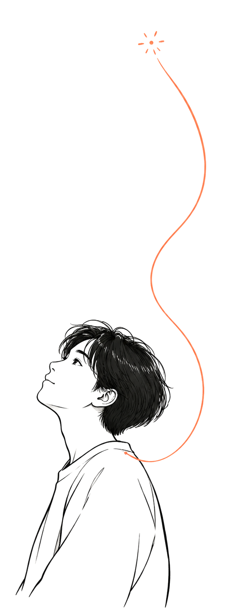
AI가지적장애에게
함께 그려 보는
서른한 가지 내일
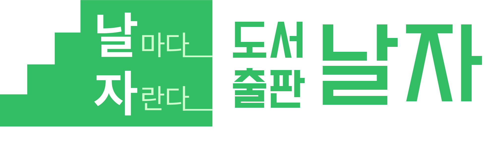
3차례
- 1장목소리가 세상에 나가는 방식
- 2장세상이 그들에게 맞춰지는 것
- 3장거꾸로, 그들이 세상과 AI를 가르친다
- 4장일과 경제
- 5장관계와 연결
- 6장권리와 시민
- 7장먼 미래
501
내 말투 그대로 번역기
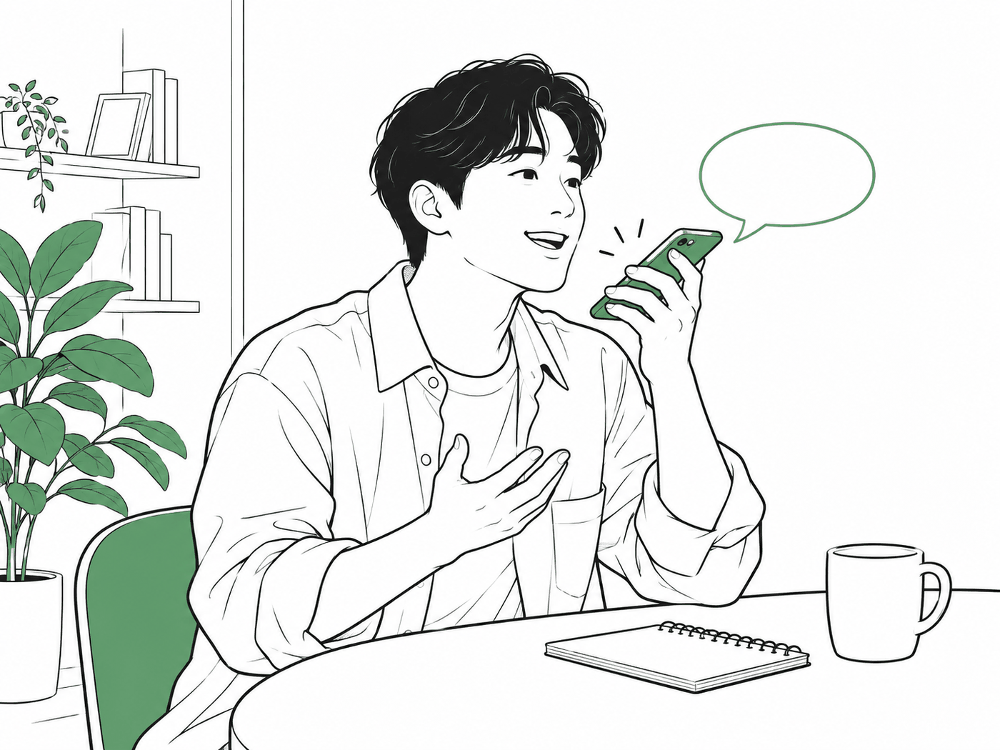
삽화 01휴대폰에 대고 말하는 청년. 화면의 말풍선 끝에 그 사람만의 말버릇 "~거든요!"가 그대로 남아 있다.문장은 다듬되 말버릇, 유머, 리듬은 살려서 "딱 그 사람이 한 말"로 들리게 해요.
602
내 목소리로 낭독한 오디오북
자기 음성을 복제해서 자기가 쓴 책을 자기 목소리로 들려줘요.
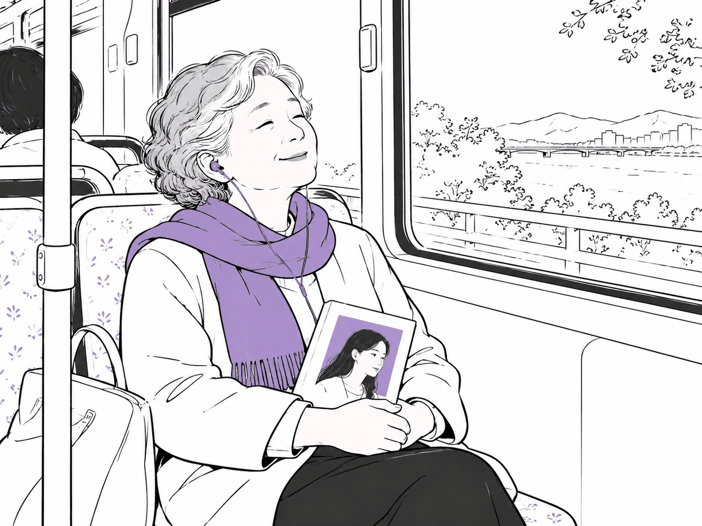
삽화 02버스에서 이어폰을 낀 할머니가 미소 짓고, 무릎 위 책 표지에 쓴 사람의 얼굴이 있다.
7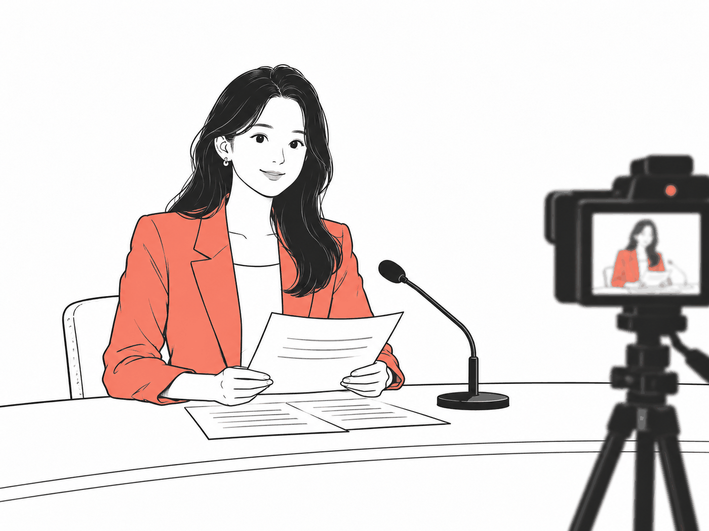
삽화 03작은 책상과 마이크 앞에 앉은 앵커. 앞에 놓인 원고에 큰 글씨 몇 줄.03
당사자 앵커 뉴스채널
발달장애인이 기획하고 진행하는 쉬운 뉴스예요. AI는 대본, 자막, 편집을 맡아요.
04
작사·작곡가
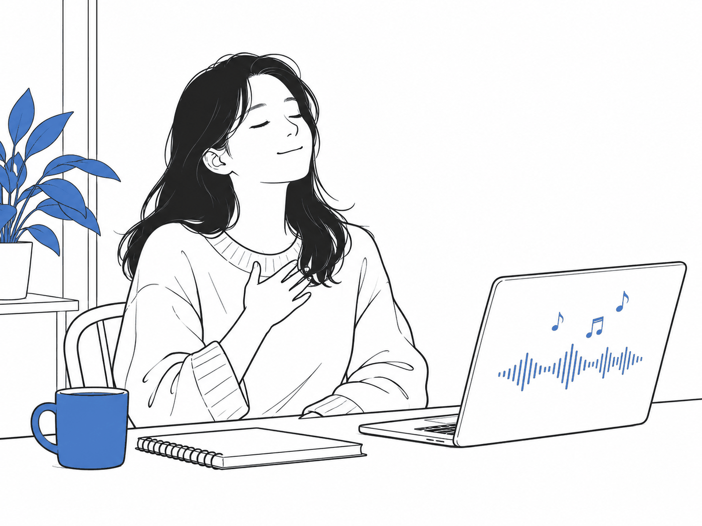
삽화 04눈을 감고 흥얼거리는 사람, 옆 노트북 화면에 음표 파형.흥얼거림과 몇 마디 말로 완성된 노래를 만들어 음원을 발매해요.
905
내 삶 웹툰
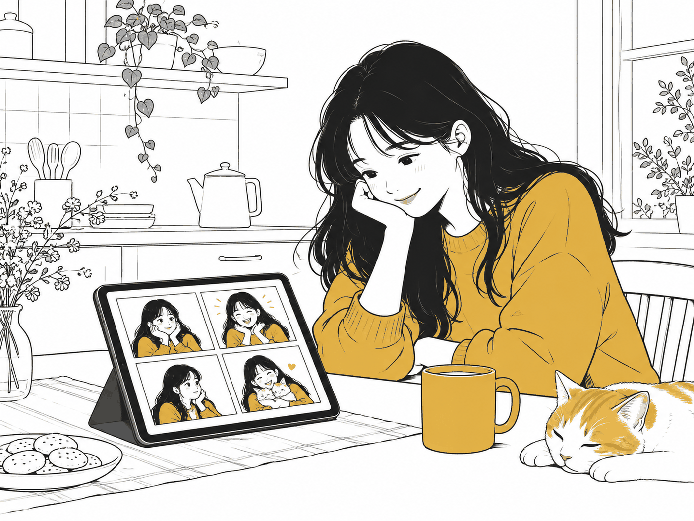
삽화 05식탁 위에 펼친 태블릿, 네 칸 만화 속 주인공이 화면 밖의 본인과 같은 얼굴.하루 동안 한 말과 찍은 사진이 매주 한 편의 웹툰이 돼요.
1006
무발화 번역
몸짓, 표정, 소리, 그림을 문장으로 옮겨요. 말이 없던 사람이 처음으로 "문장"을 갖게 돼요.
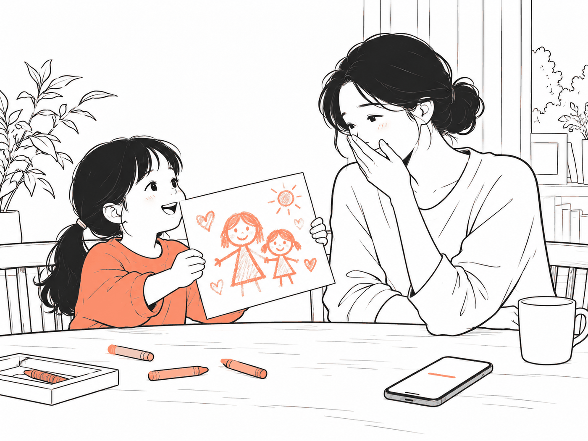
삽화 06크레파스 그림을 내미는 아이, 그 옆 화면에 한 줄 문장이 떠오르고 엄마가 입을 가리고 있다.
12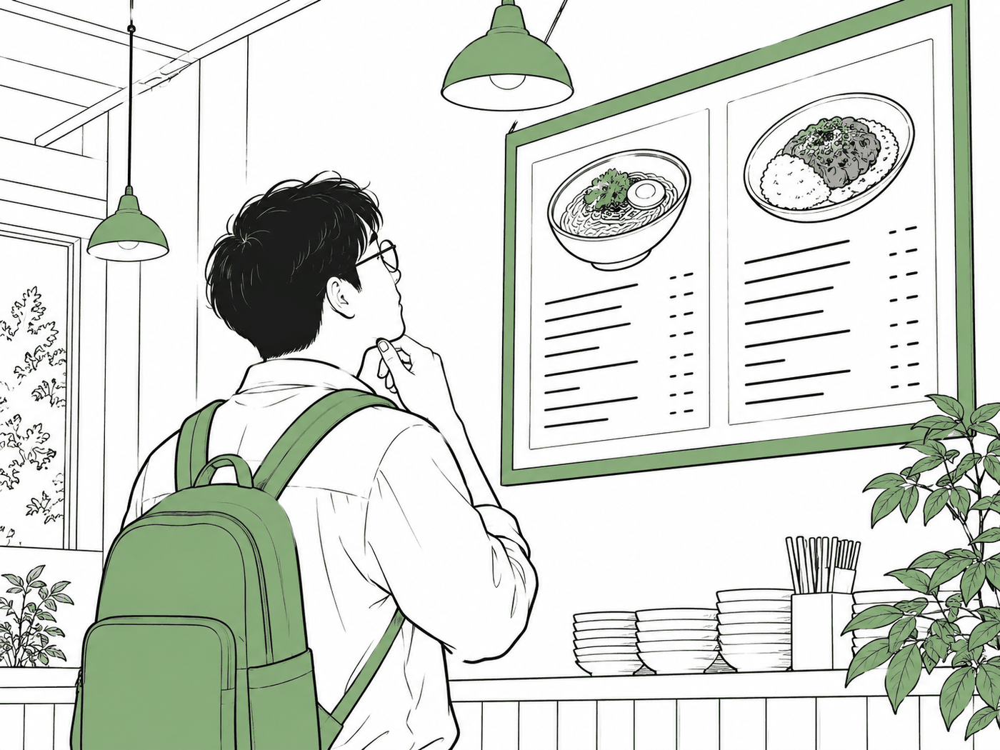
삽화 07안경을 쓰고 식당 메뉴판을 보는 사람. 렌즈 안에만 그림 메뉴가 비친다.07
쉬운 세상 안경
스마트글래스로 간판, 메뉴판, 계약서를 보면 쉬운 말과 그림으로 바뀌어 보여요.
08
귓속 코치
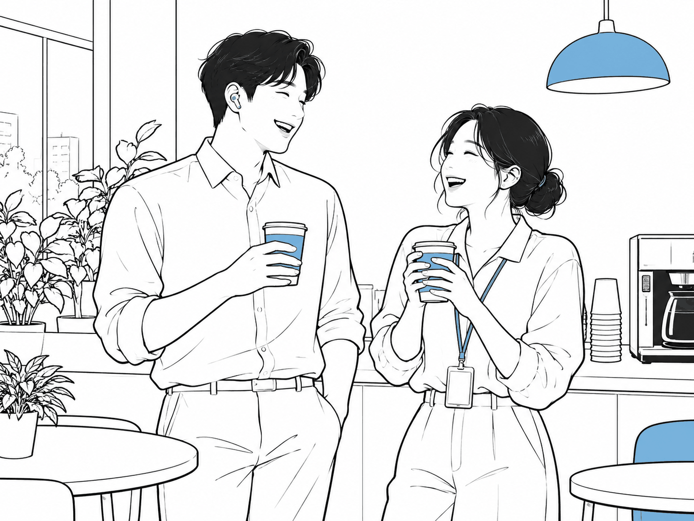
삽화 08회사 휴게실에서 동료와 함께 웃는 사람, 한쪽 귀에 작은 이어폰.대화 중에 이어폰으로 "지금 저 사람 농담이야", "여기서 고맙다고 하면 좋아" 하고 속삭여 줘요.
1409
모든 웹사이트에 '나 모드'
삽화 09노트북 화면에 버튼 세 개만 크게 떠 있고, 그 앞에서 혼자 이체를 마친 사람이 기지개를 켠다.은행, 정부24, 쇼핑몰이 그 사람에게 맞는 난이도와 속도로 자동 재구성돼요.
1510
쉬운 판결문, 쉬운 공약집
법원과 선거 자료가 발표되는 즉시 개인 맞춤판이 나와요.
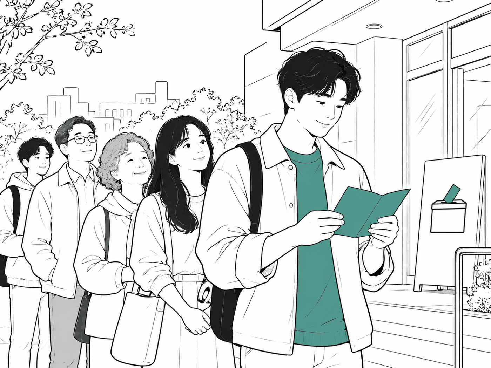
삽화 10투표소 앞 줄에 선 사람이 손에 쥔 얇은 종이를 확인한다.
16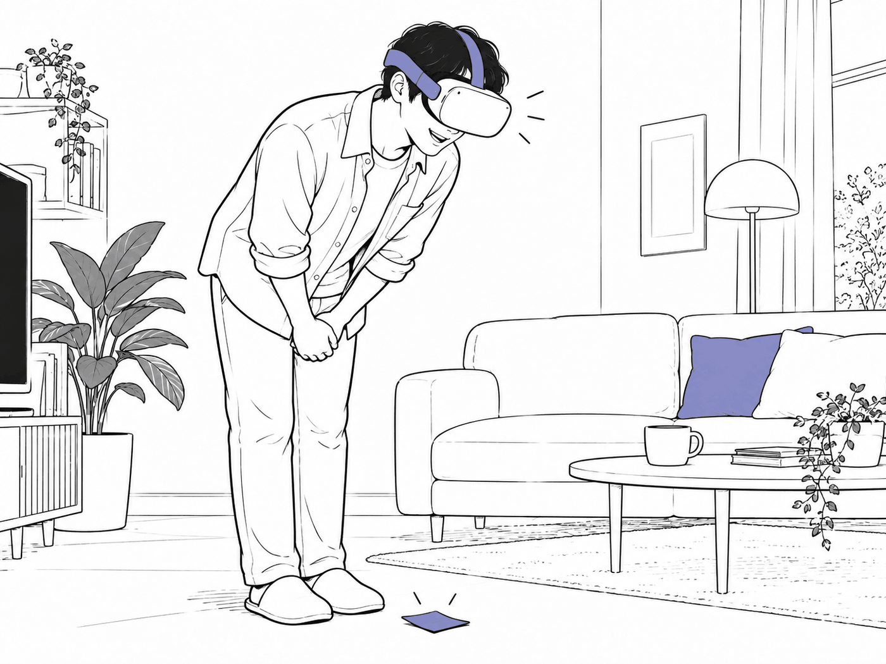
삽화 11거실에서 VR 기기를 쓰고 허리 숙여 인사하는 사람. 발밑에 '첫 출근' 메모.11
인생 리허설 VR
첫 출근, 첫 이사, 첫 병원을 미리 열 번 살아 봐요.
12
AI의 '이해 심판'
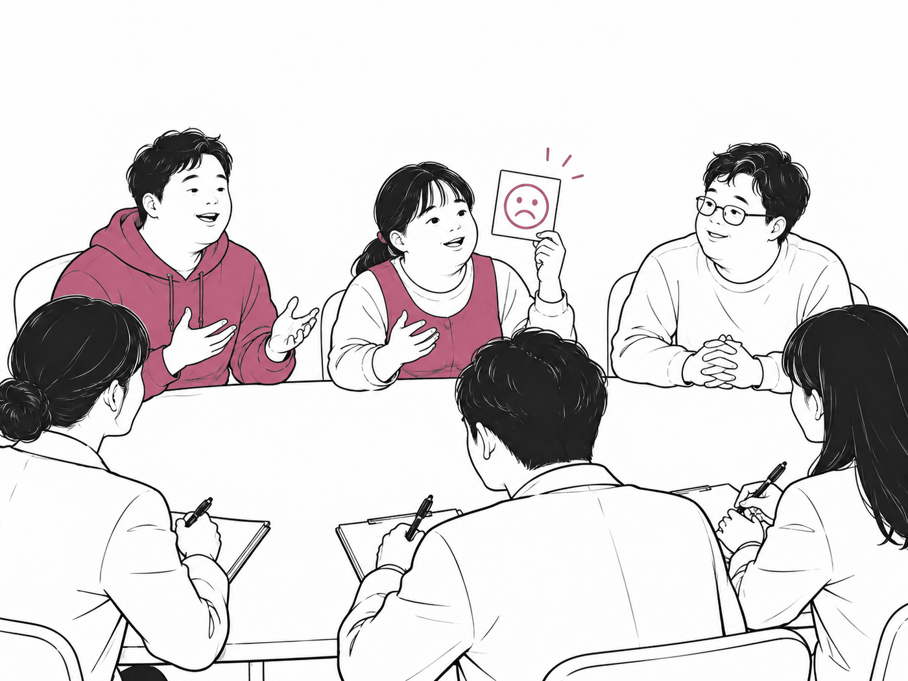
삽화 12긴 테이블에 앉은 심사단, 한 사람이 "어려워요" 카드를 들고 있고 맞은편 양복 차림 사람들이 받아 적는다.전 세계 AI 회사가 "우리 설명이 정말 이해되는가"를 당사자 심사단에게 받는 구조예요. 이 사람들이 이해하면 노인, 아이, 외국인도 다 이해해요.
1913
돌봄로봇의 선생님
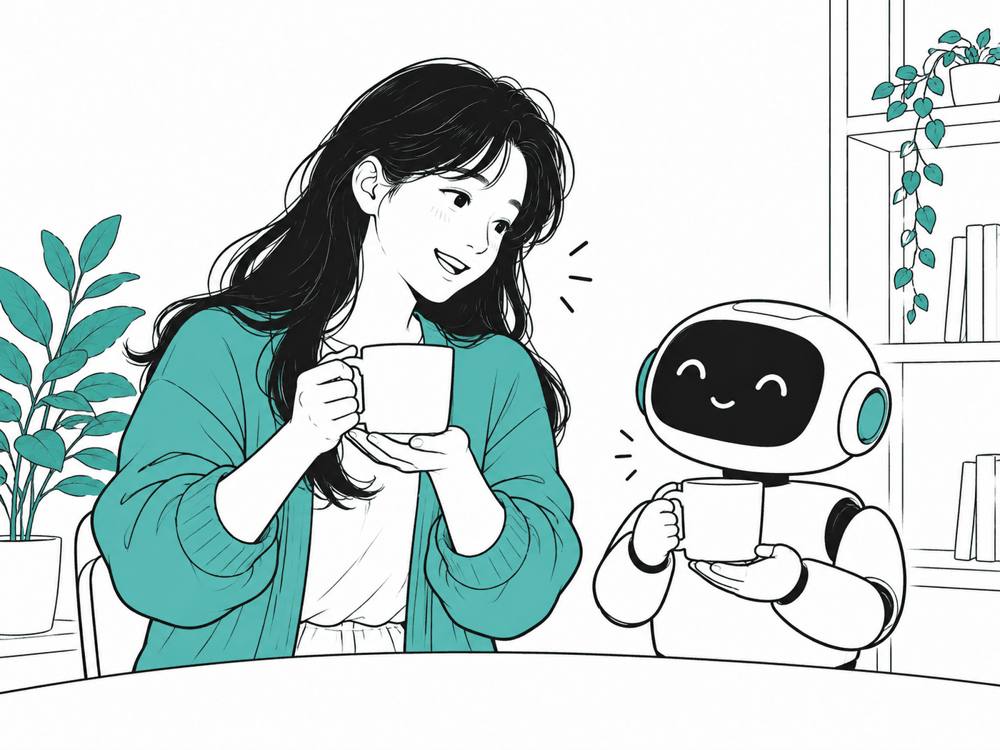
삽화 13로봇 옆에서 컵을 드는 시범을 보이는 사람, 로봇이 같은 자세를 따라 한다.로봇에게 "나는 이렇게 도와줘야 편해"를 가르치는 직업이에요.
2014
다정한 AI의 원형
서두르지 않고, 반복을 귀찮아하지 않고, 솔직한 태도를 당사자와의 대화 데이터에서 배운 AI 성격이에요. 결국 모두가 쓰는 AI가 더 친절해져요.
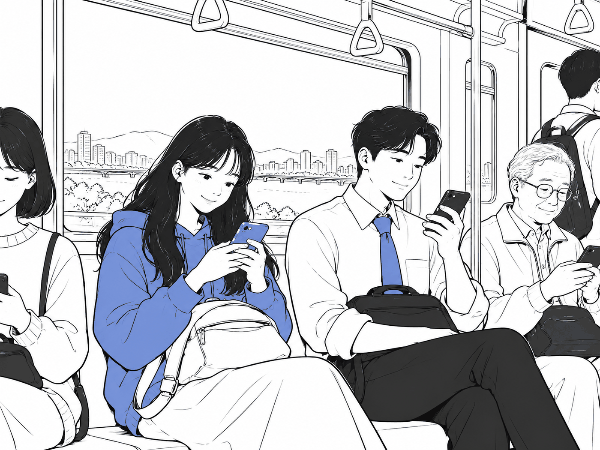
삽화 14지하철 안 여러 사람이 각자 휴대폰을 보며 편안한 얼굴. 모두의 화면에 같은 말 "천천히 해도 돼요".
21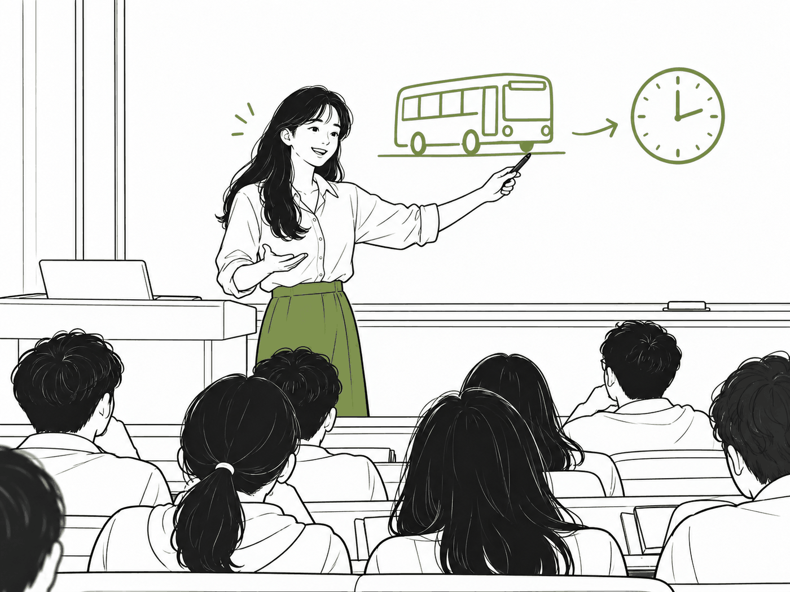
삽화 15칠판 앞에서 "시간은 버스 시간표 같아요"라고 설명하는 사람, 강의실을 가득 채운 청중.15
사고방식 자체가 자산
구체적인 경험으로 추상을 이해하는 그들의 방식이 "좋은 설명"의 세계 표준이 돼요.
16
AI 직원을 둔 1인 사장
삽화 16작은 카페 카운터 뒤, 앞치마를 두른 사장이 태블릿에서 "좋아요" 버튼을 누른다.굿즈샵, 카페, 유튜브 채널 운영을 에이전트가 뒷받침해요. 사장은 결정만 해요.
2417
캐릭터와 IP 주인
삽화 17편의점 진열대의 과자 봉지에 그려진 캐릭터를 가리키며 친구에게 자랑하는 사람.자기가 만든 캐릭터가 라이선싱돼서 로열티가 들어와요.
2518
데이터 배당 기본소득
내 기록과 목소리가 쓰일 때마다 수입이 생겨요.
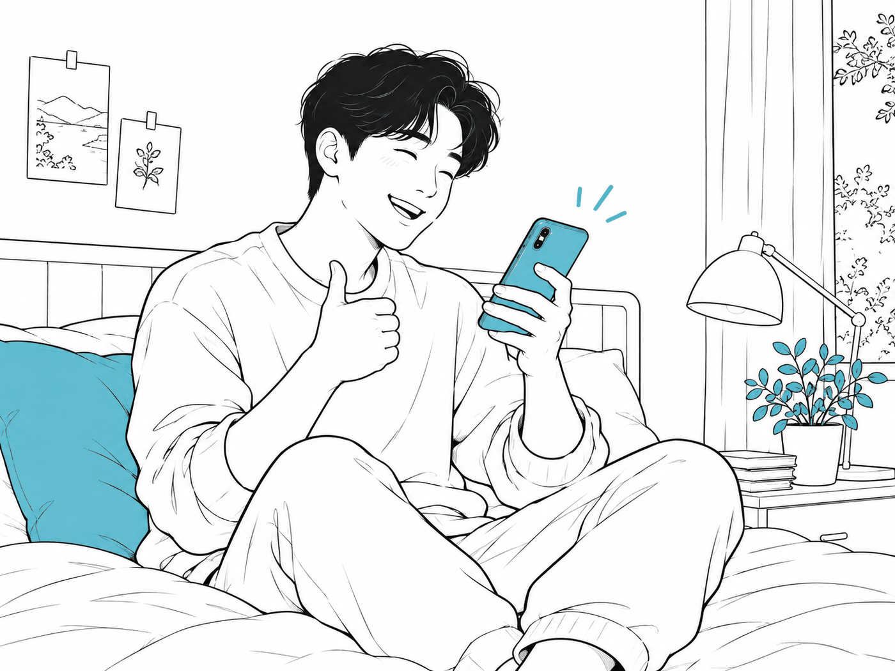
삽화 18휴대폰 알림 "이번 달 배당금이 들어왔어요"를 보고 엄지를 드는 사람.
26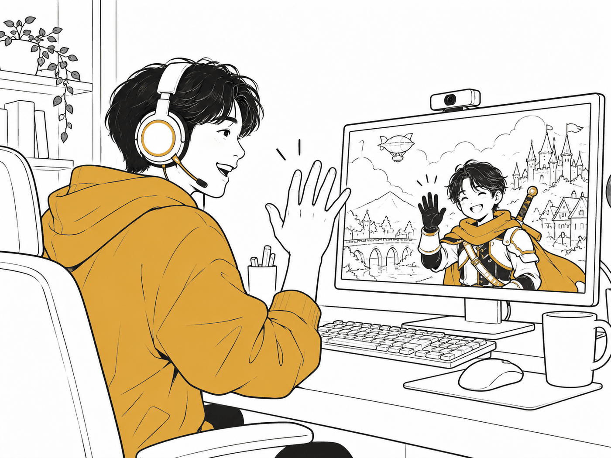
삽화 19헤드셋을 쓰고 손을 흔드는 사람, 모니터 속 아바타가 똑같이 손을 흔든다.19
가상세계 직업
게임 속 NPC 연기자나 메타버스 안내원이에요. 몸이 아니라 개성이 경쟁력이 돼요.
20
업무 쪼개기 AI
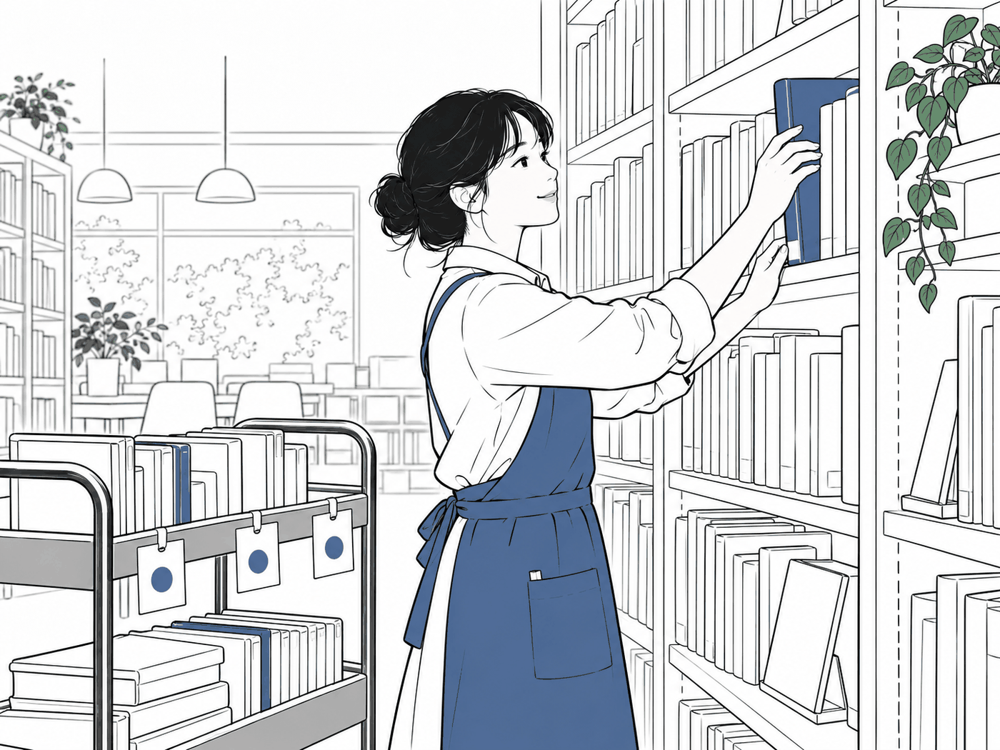
삽화 20도서관 서가에서 책을 제자리에 꽂는 직원. 수레에 번호 카드가 순서대로 붙어 있다.어떤 직장이든 그 사람이 할 수 있는 단위로 일을 재구성해 줘요.
2921
세계 당사자 네트워크
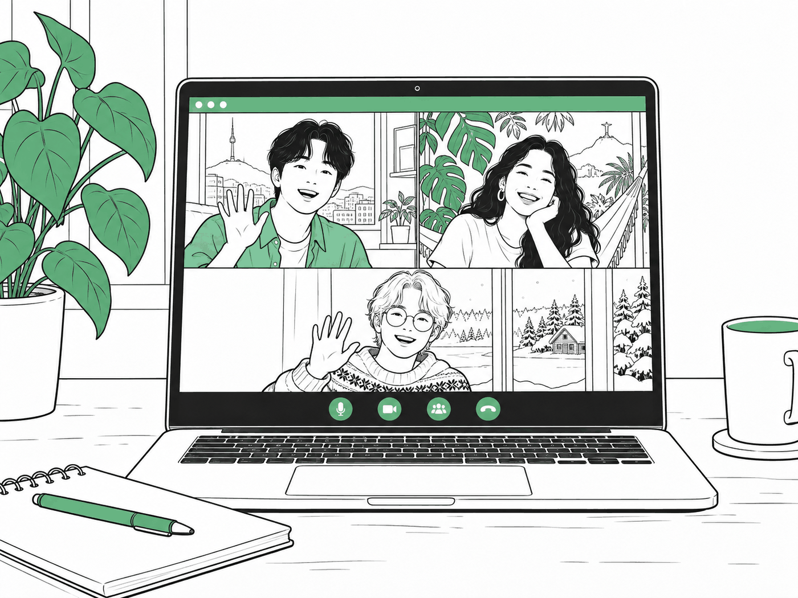
삽화 21화상 통화 화면에 세 나라 사람이 웃고 있다. 각자 다른 언어의 말풍선.실시간 통역으로 한국, 브라질, 핀란드의 발달장애인이 친구가 되고 국제 자기옹호 연대를 만들어요.
3022
가족 오해 통역기
엄마의 잔소리와 내 속마음을 서로 알아듣는 말로 바꿔 줘요.
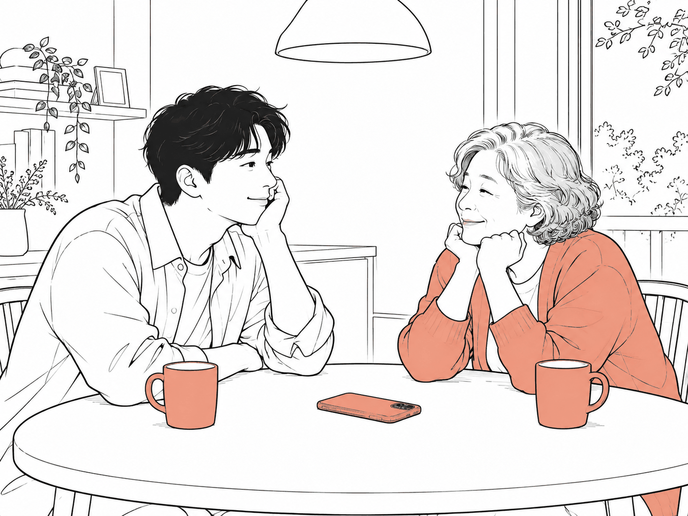
삽화 22식탁에 마주 앉은 엄마와 자녀, 가운데 휴대폰. 둘 다 조금 쑥스러운 얼굴.
31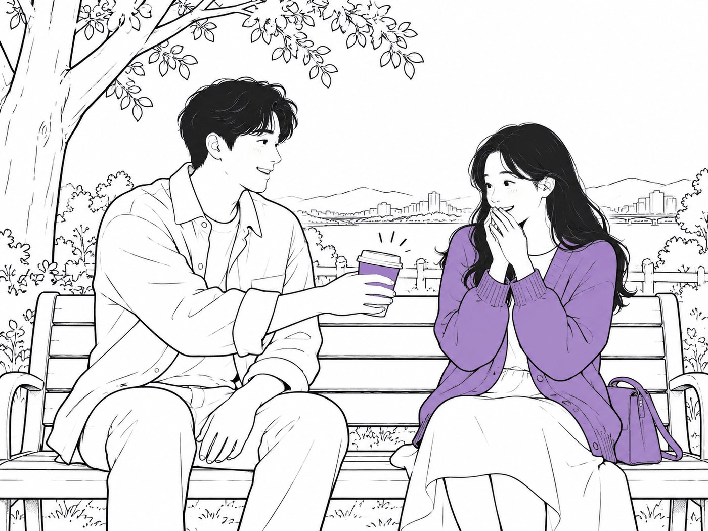
삽화 23공원 벤치에 앉은 두 사람, 한 사람이 조심스럽게 음료를 건넨다.23
친구·연애 매칭과 데이트 코치
관계를 시작하고 이어 가는 걸 도와줘요.
24
기억 앨범
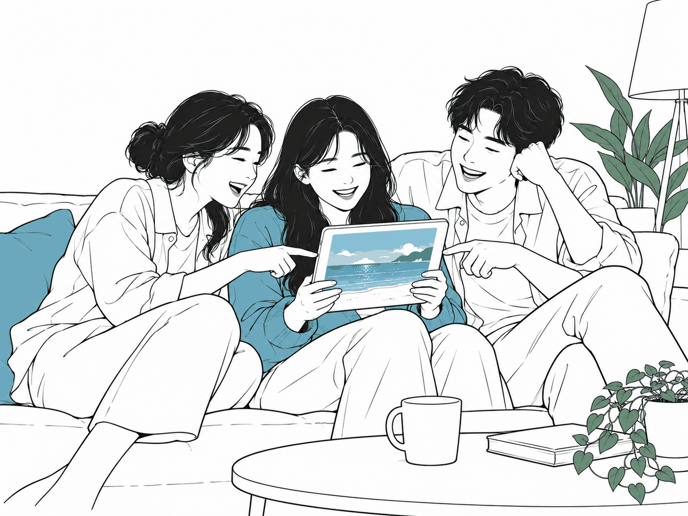
삽화 24소파에 나란히 앉은 친구들이 태블릿 속 바닷가 사진을 가리키며 웃는다.함께한 사람들과 순간을 기억해 줘서 "그때 우리 거기 갔었잖아"를 같이 말할 수 있어요.
3425
개인 AI 보좌관
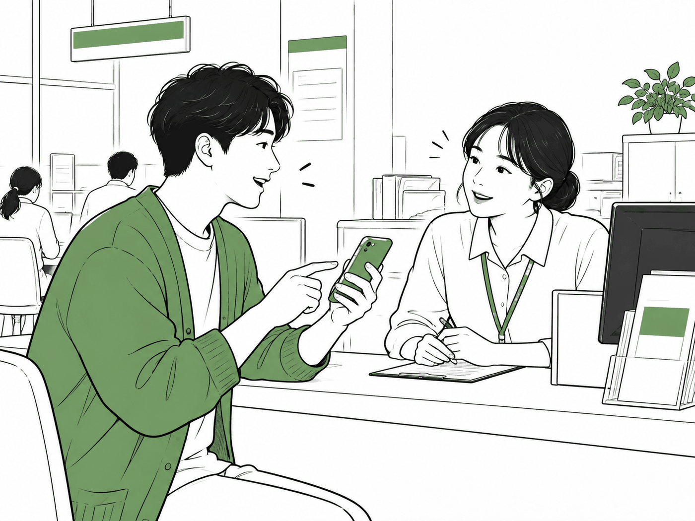
삽화 25주민센터 창구 앞, 휴대폰을 보며 또박또박 말하는 사람. 창구 직원이 고개를 끄덕인다.민원, 이의신청, 계약 검토, 권리 안내를 옆에서 해 줘요.
3526
당사자 정치인
출마하고, 의정 활동을 AI 보좌진이 받쳐 줘요.
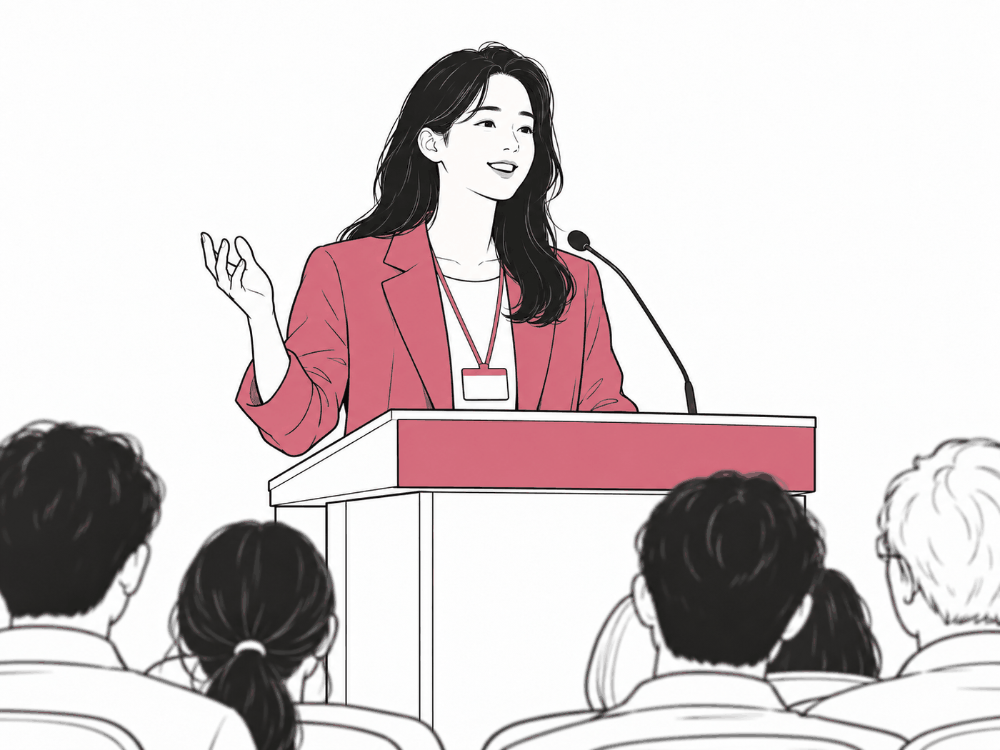
삽화 26연단에서 원고 없이 말하는 사람, 가슴에 달린 이름표.
36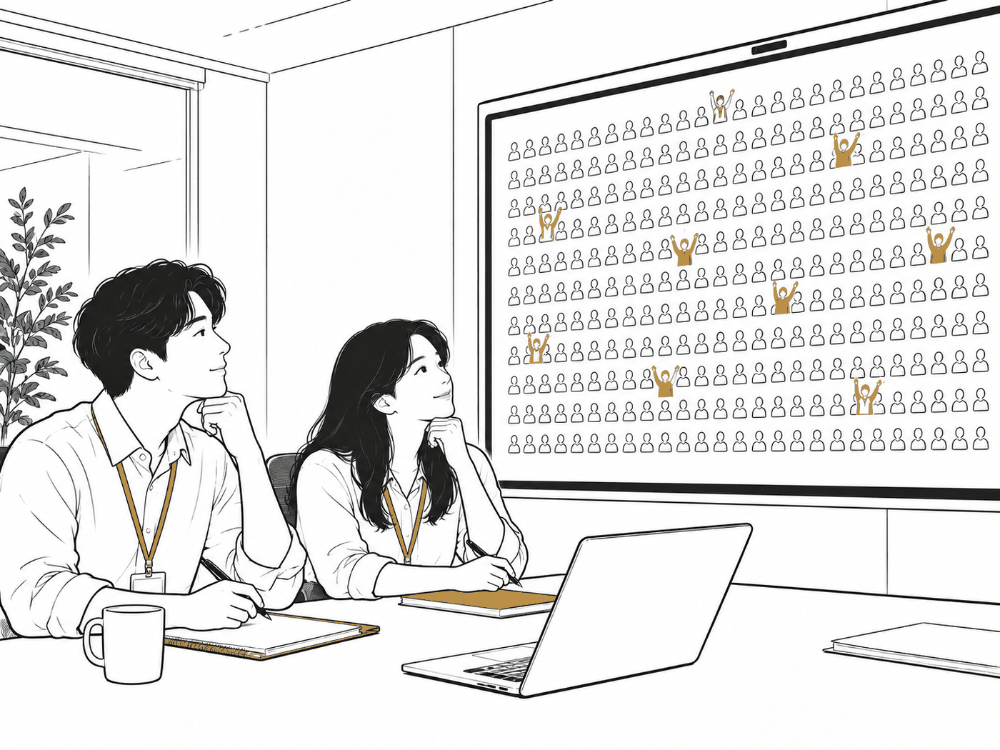
삽화 27회의실 벽 화면에 작은 사람 그림 수천 개, 그중 몇이 손을 들고 있다.27
정책 시뮬레이터
새 제도를 만들 때 당사자 수천 명의 가상 삶에 먼저 돌려 보고 결정해요.
28
평생 동반자
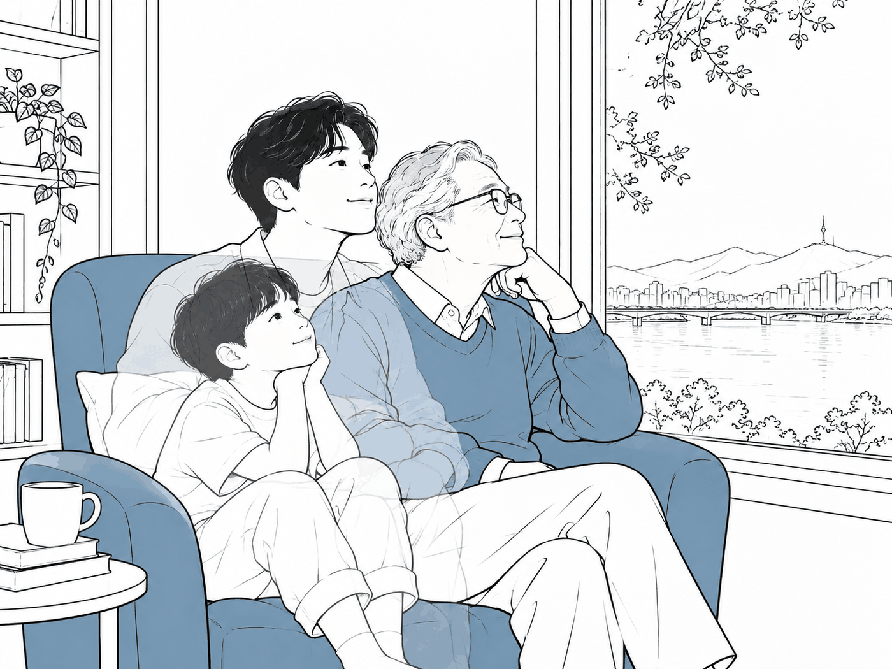
삽화 28같은 창가 의자에 앉은 한 사람의 세 나이(소년·중년·노년)가 겹쳐 그려져 있다.한 사람을 60년 동안 기억하고 이해하는 AI예요. 부모가 떠나도 "나를 아는 존재"가 끊기지 않아요.
3929
부모의 지혜가 남는 AI
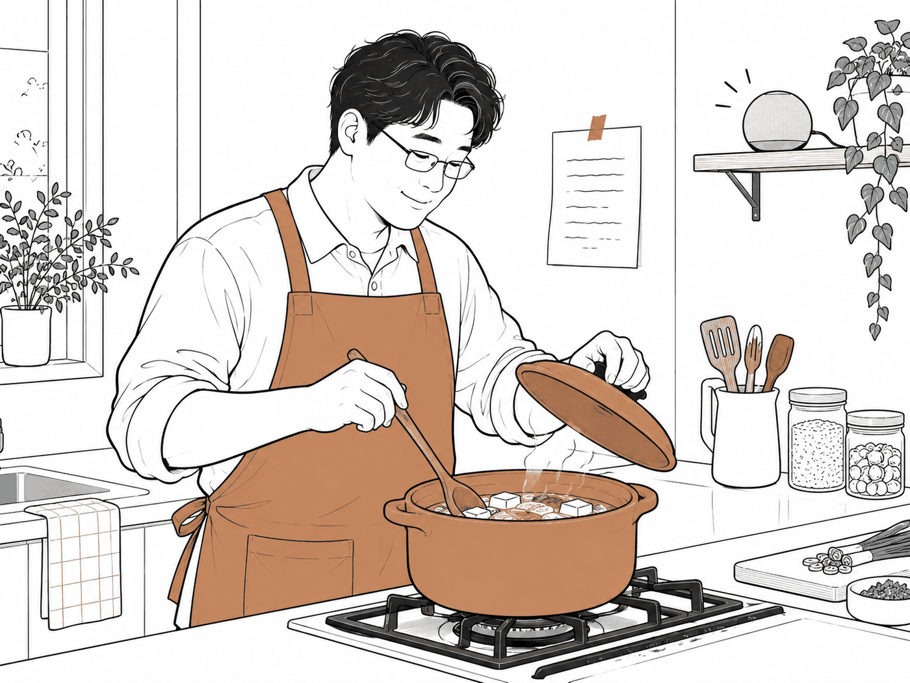
삽화 29부엌에서 혼자 된장국을 끓이는 중년, 벽에 붙은 엄마 손글씨 메모와 스피커.엄마가 어떻게 판단했는지를 배운 조언자예요.
4030
생각을 바로 표현
뇌-컴퓨터 인터페이스로 말이나 글을 거치지 않고 생각을 표현해요.
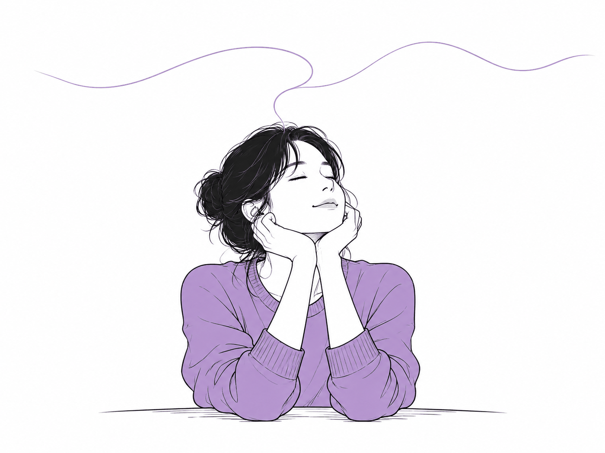
삽화 30눈을 감은 사람 머리 위로 떠오른 가느다란 선이 문장이 되어 흘러간다.
4131
'지적장애' 범주의 소멸
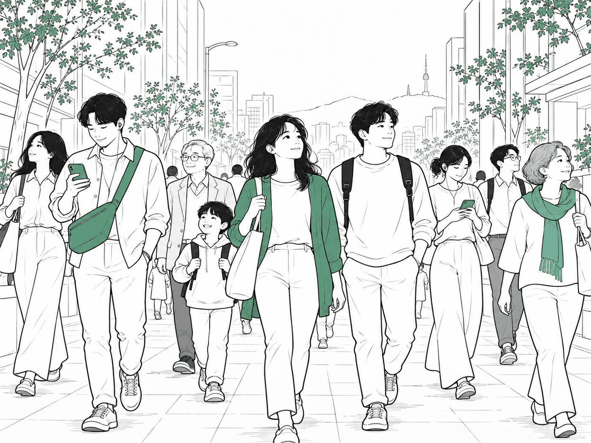
삽화 31거리의 여러 사람. 누구는 안경을, 누구는 이어폰을 끼고 있고, 아무도 누가 누군지 구분되지 않는다. 앞표지 뒷모습과 짝이 되는 앞모습.안경이 근시를 장애가 아니게 만들었듯, 인지 보조가 공기처럼 당연해지면 "지능이 낮다"는 구분 자체가 의미를 잃어요. 남는 건 개성, 취향, 경험의 차이뿐이에요.
"지능이 낮다"는 구분 자체가 의미를 잃어요.
AI가 지적장애에게
www.naljabooks.com© 2026 도서출판 날자. All rights reserved.